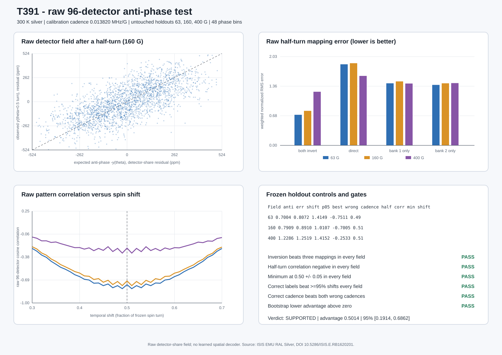

SUPPORTED. All six frozen gates were required.

| run | G | period us | anti err | direct err | bank 1 err | bank 2 err | half corr | min shift | detector shifts beaten | best wrong cadence |
|---|---|---|---|---|---|---|---|---|---|---|
| EMU00066578 | 63 | 1.148554 | 0.700364 | 1.857478 | 1.421890 | 1.385266 | -0.751141 | 0.49 | 1.000 | 1.414893 |
| EMU00066579 | 160 | 0.452243 | 0.790940 | 1.882575 | 1.465528 | 1.421936 | -0.700516 | 0.51 | 1.000 | 1.010746 |
| EMU00066580 | 400 | 0.180897 | 1.228560 | 1.591648 | 1.416928 | 1.426540 | -0.253306 | 0.51 | 1.000 | 1.415158 |
Pooled full-inversion advantage: 0.501422; hierarchical-bootstrap 95% interval [0.191351, 0.686157].
The primary score uses raw population detector-share patterns after cadence-only phase folding. It does not observe individual muons, decay vertices, neutrinos, or a spin-controlled decay trigger.